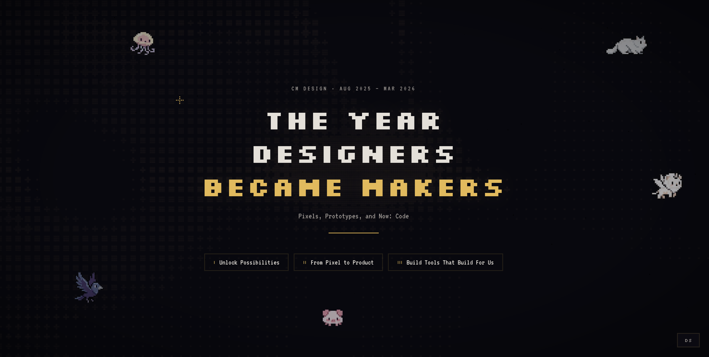
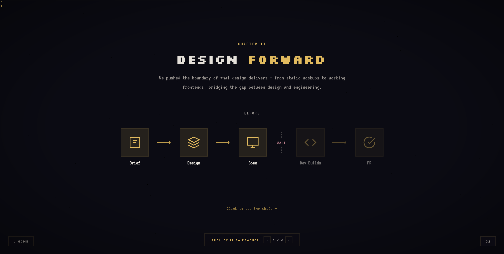

CM Design · Weekly Status
C3 Week 4
Alignment
& Closure
& Closure
David
Principal Designer
March 27, 2026
Principal Designer
March 27, 2026
Summary
60%
Chromium (Mac)
Core flows aligned
Done
Annual Review
Shanying review delivered
聚焦兩件事：Chromium adoption 核心 flow 對齊並準備下週 review build，以及 Shanying annual review deck 的完成。
Progress
Chromium
Adoption
Adoption
In Progress · 60%
Chat, entry, 基礎交互已完成對齊，與原生設計保持一致。
60
Framework 要求
Sergey 對 initial framework 的要求：內容區需頂對齊，sidebar 收起時側邊欄導航不顯示（與 Copilot Mac native 一致）。
⚠ 技術挑戰
按現有實現方式嚴格遵循頂對齊 + 收起 sidebar 邏輯，需要一定重構。需等待 Xiaolin 與 Sergey 確認最終方案落地。
- 對開發 build 出來的第一版本進行 design review
- 等待 Xiaolin 反饋，根據確認結果調整實現方案或優先級
The Year Designers Became Makers
Annual Review · Completed




Newsletter
This
week.
week.
團隊動態與設計方向觀察。
團隊合作亮點
Annual review 過程中，團隊在分工和故事結構上各抒己見，產出了充分體現 CM team 對 Copilot Mac Quality & Design 標準的 deck。合作氛圍非常好。
Chromium 方向確認中
核心流程已對齊，但 Sergey 的 framework 要求涉及重構。Xiaolin 是決策點 — 等確認後才能定實現路線。
Vibe Coding 分享邀請
Yanti 邀請我們下週分享 Vibe Coding 製作 Mac native Liquid Glass 的經驗，將與 Yuchen 一起準備培訓。
Others
Vibe Coding ×
Liquid Glass
Liquid Glass
Yanti 邀請我們下週分享使用 Vibe Coding 製作 Mac native Liquid Glass 的經驗。將與 Yuchen 一起準備並進行培訓。
Top of Mind
雖然整體方向正在向 Chromium 轉，但這段經驗可以沉澱下來，作為傳授給其他組同學的寶貴經驗。
這次 annual review 中，團隊在分工和故事結構上各抒己見。合作氛圍非常棒，也為這陣子努力付出後突然方向轉變的落差帶來了一些小確幸。
這是最重要的收獲 — 經驗不會消失，而是成為可以傳遞的東西。
這是最重要的收獲 — 經驗不會消失，而是成為可以傳遞的東西。
Thank
you.
you.
Questions? Let me know.